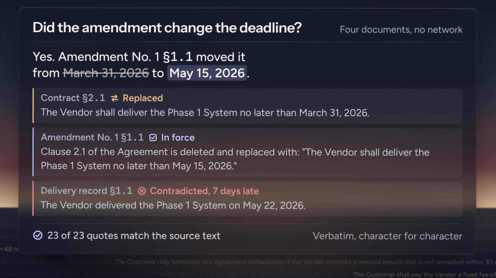

Did the amendment change the deadline?
ClaimTrace maps who owes what, and answers only with verified quotes.
Runs in your browser. Nothing is uploaded.
Sample contract, checked
-
2.1
March 31, 2026May 15, 2026 ReplacedContract §2.1 The Vendor shall deliver the Phase 1 System no later than
March 31, 2026.Amendment No. 1 §1.1 Clause 2.1 of the Agreement is deleted and replaced with: "The Vendor shall deliver the Phase 1 System no later than May 15, 2026."
Contradicted Delivery record §1.1: Done on 22 May 2026, after the deadline of 15 May 2026 (7 days late).
3.2
30 days45 daysReplacedAmendment No. 1 §1.2
5.3
48 hours72 hoursReplacedAmendment No. 1 §1.3
4.1Measured 99.1% is below the committed 99.5%.Contradicted
Audit report §2.5
5.2Location differs: commitment refers to United Kingdom; other document says Ireland.Contradicted
Audit report §2.2
23 of 23 quotes match the source text character for character.
Every finding points back to a clause
One lane per sample document. Choose a clause to read its words and see what replaces, supports or contradicts it.
- Replaces or changes
- Supports
- Partly supports
- Contradicts
- Needs review
Each clause is a button. Arrow keys move along a document and between documents; the panel shows the clause in focus and what links to it.
Contract
Amendment No. 1
Audit report
Delivery record
Contract §2.1
Delivery
Replaced
The Vendor shall deliver the Phase 1 System no later than March 31, 2026.
Verbatim from msa-v1.md
Links
- ReplacedReplaced by Changed by the amendment (§2.1). Date differs: 31 Mar 2026 vs 15 May 2026.
Every link the engine found, as a list (11)
- Replaced Contract §2.1, replaced by Amendment No. 1 §1.1. Changed by the amendment (§2.1). Date differs: 31 Mar 2026 vs 15 May 2026.
- Partly supported Contract §2.2, partly supported by Delivery record §2.1. Part of the commitment is supported, but the other document also reports an exception or gap: "Weekly written progress reports were received from the Vendor from January 2026 until Acceptance, except for the weeks of March 9 and March 16, 2026."
- Changed Contract §3.1, changed by Amendment No. 1 §2.1. Changed by the amendment (§2.1). Amount differs: 120,000 vs 110,000.
- Replaced Contract §3.2, replaced by Amendment No. 1 §1.2. Changed by the amendment (§3.2). Period differs: 30 vs 45 days.
- Contradicted Contract §4.1, contradicted by Audit report §2.5. Measured 99.1% is below the committed 99.5%.
- Supported Contract §5.1, supported by Audit report §2.1. Matching text was located in the other document.
- Contradicted Contract §5.2, contradicted by Audit report §2.2. Location differs: commitment refers to United Kingdom; other document says Ireland.
- Replaced Contract §5.3, replaced by Amendment No. 1 §1.3. Changed by the amendment (§5.3).
- Partly supported Contract §5.4, partly supported by Audit report §2.4. Part of the commitment is supported, but the other document also reports an exception or gap: "However, two shared break-glass accounts were found without multi-factor authentication."
- Contradicted Amendment No. 1 §1.1, contradicted by Delivery record §1.1. Done on 22 May 2026, after the deadline of 15 May 2026 (7 days late).
- Needs review Amendment No. 1 §1.3, needs review against Audit report §2.3. Same period (72 hours) but a different starting point: "becoming aware of it" vs "confirming a breach". The clock may start later.
Three ways to run it
Same engine, same quotes. Pick where your documents may go.
In the browser
No install, no account. The engine runs in the tab.
Your file is never uploaded.
With Claude
A skill for Claude.ai, or a plugin for Claude Code.
Documents you share go to Anthropic.
Self-host
Docker Compose, or Python 3.11+ and Node 20+. It serves on 127.0.0.1 only.
git clone https://github.com/glowstonesq1/claimtrace
cd claimtrace
docker compose up --buildSends nothing out by default.
The numbers, including the bad ones
Scored on sealed cases nobody opened before the code was frozen, with 95% intervals: bootstrap, as in the evaluation report, or Wilson for counts and where a bootstrap has no width.
| Measure | ClaimTrace | 95% interval | Keyword floor |
|---|---|---|---|
| Makes up an answer, lower is better | 0.00 | 0.00 to 0.32, n=8 | 0.50 |
| Wrongly says all clear, lower is better | 0.03 | 0.01 to 0.11, n=63 | 0.29 |
| Finds the contradictions (recall) | 0.71precision 0.83 | 0.45 to 0.88, n=14 | 0.00 |
| Consistency checks | 0.81 | 0.62 to 0.95, n=21 | 0.76 |
| Amendment checks, unfamiliar wording | 0.60 | 0.51 to 0.70, n=105 | 0.06 |
| Amendment effect, unfamiliar wording | 0.71 | 0.62 to 0.80, n=91 | not scored |
What it will not do
- Give legal advice
- No risk scores, no view on enforceability.
- Get every amendment right
- On wording it has not seen, 4 in 10 amendment checks are wrong. Check them yourself.
- Read scanned PDFs everywhere
- Self-hosted, only with the optional OCR extra. The browser version flags them, unread.
- Replace your contract system
- It is not a CLM and not a chatbot.
With no supporting text the answer is “I could not find support for this in the uploaded documents.” On consistency, always saying “consistent” does about as well. All cases are synthetic.
Watch it check the samples
The same four documents, one continuous take: the question, the amendment, the contradictions, the answer.
